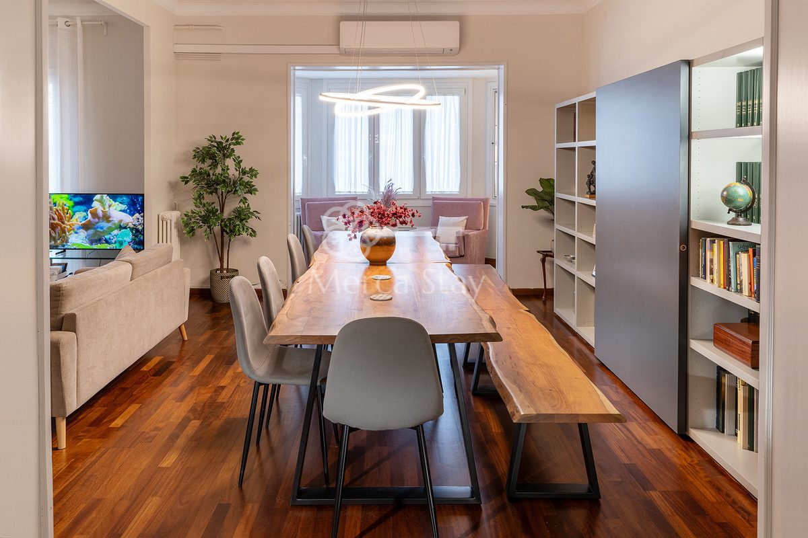
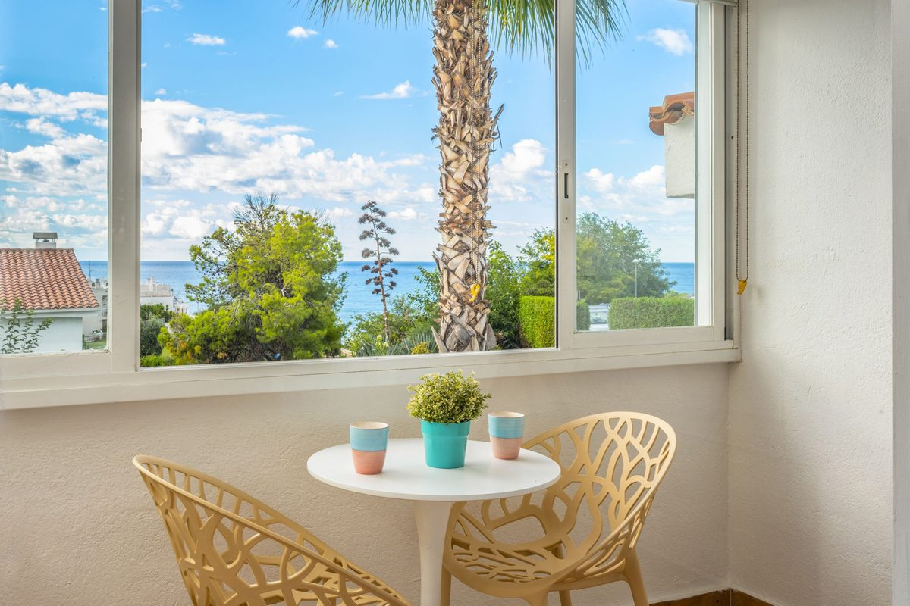
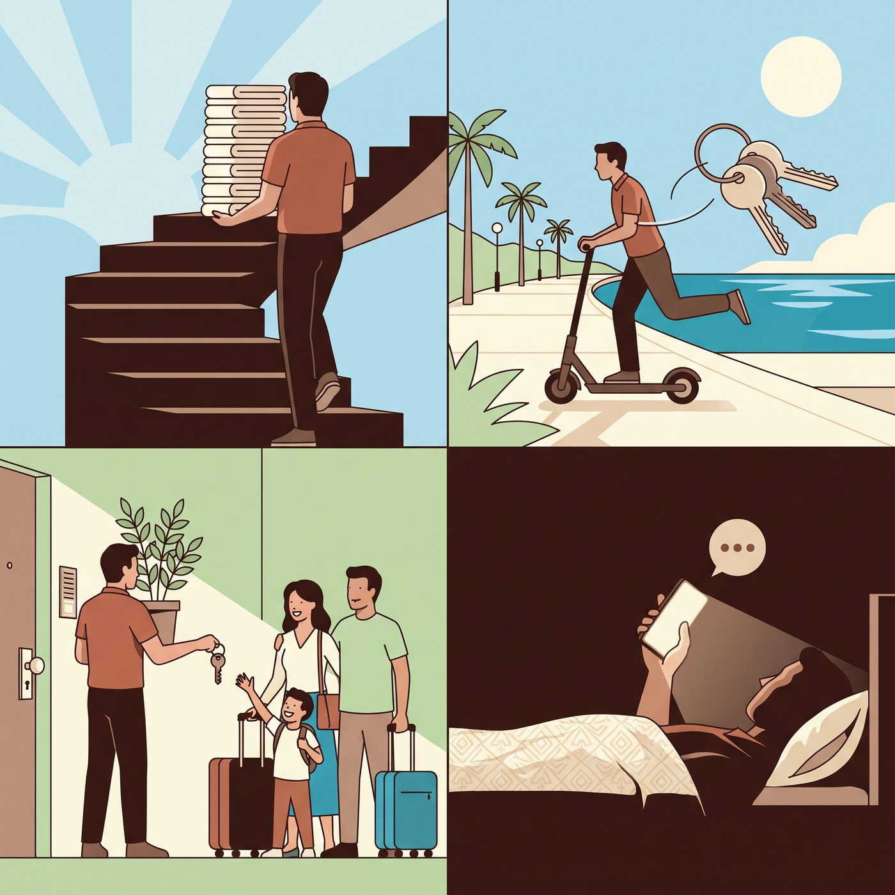
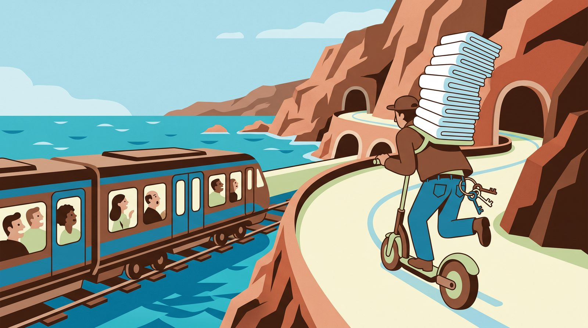
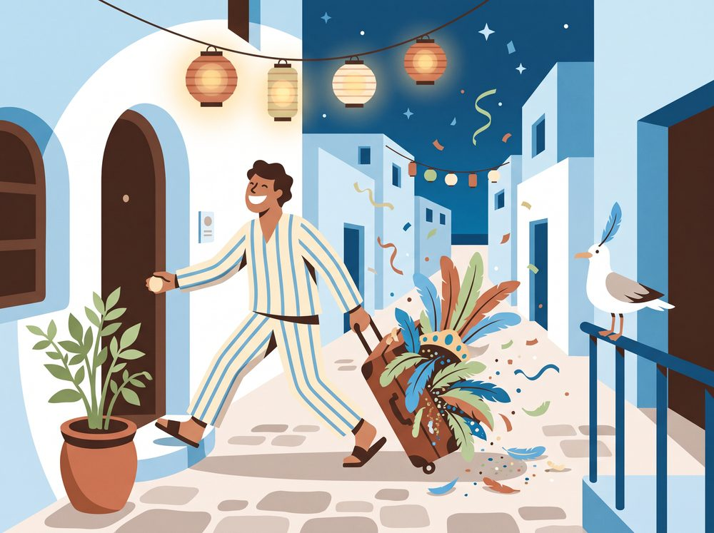
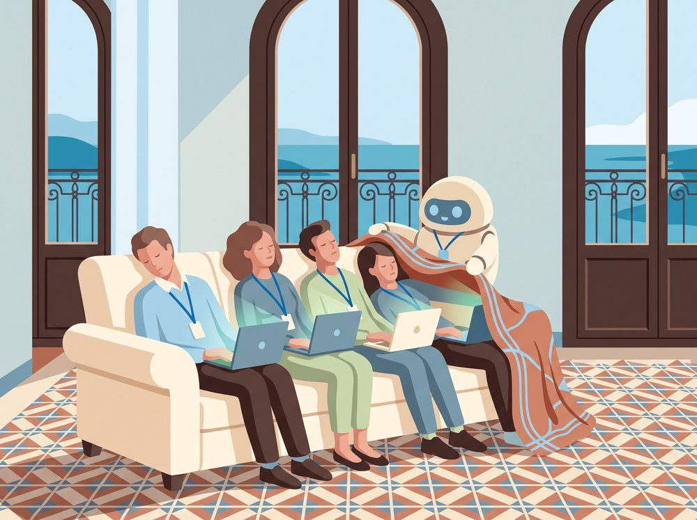
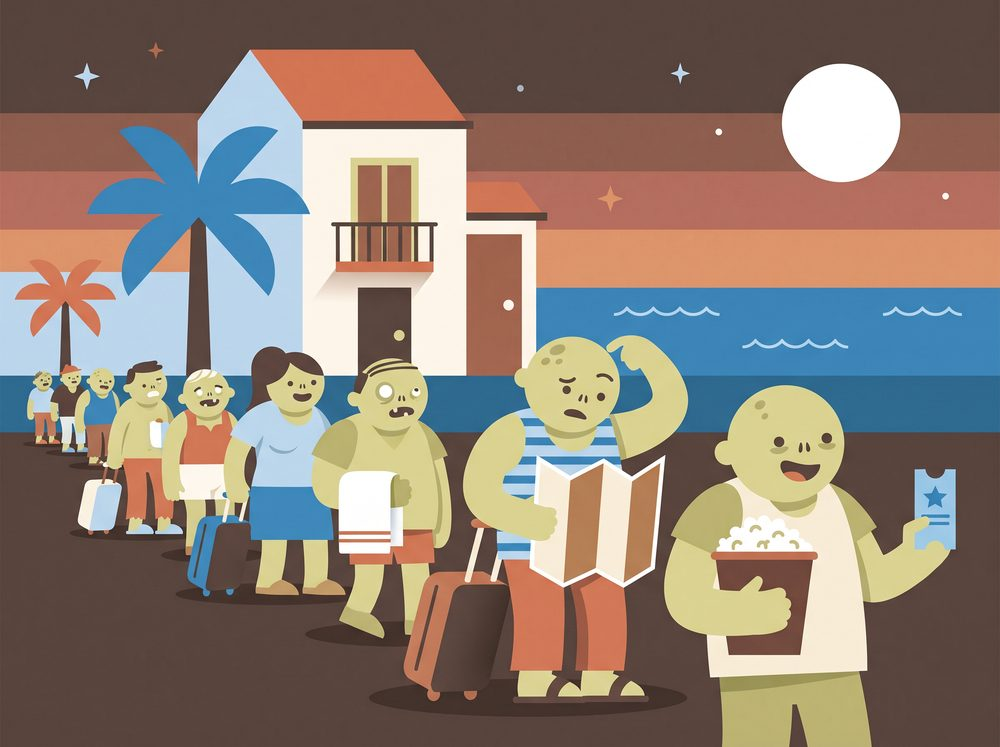
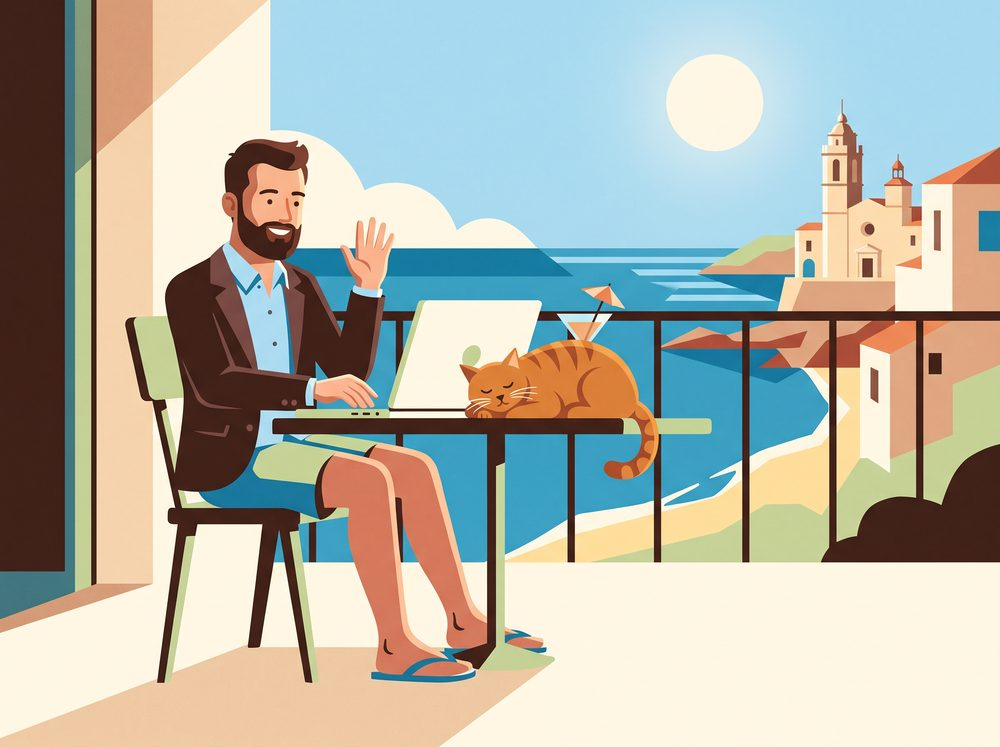
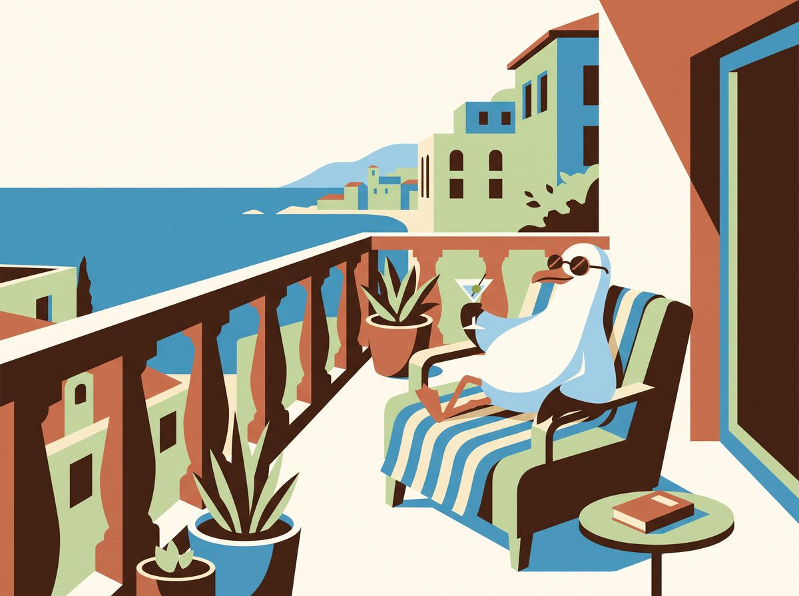
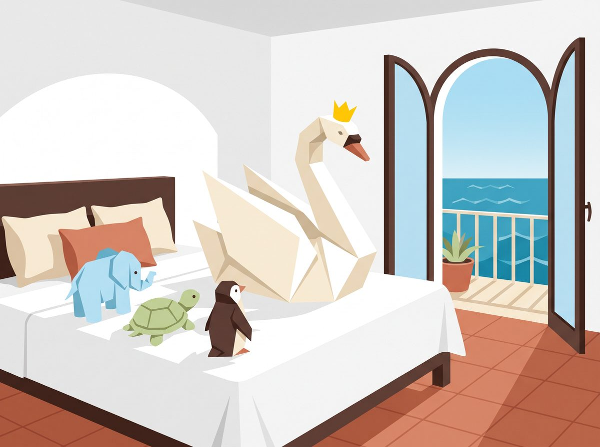

Marc runs Merca Stay Apartments: two flats in Barcelona, four in Sitges and one phone that answers within the hour. He did not ask for a fan page. He got one anyway.
Voice: Jaclyn, via ElevenLabs. Music: “Fireworks” by Alexander Nakarada, CC0, via FreePD. Captions are in each player's menu.
Who is Marc?
A Barcelona native who saw the world, then came home to host it
Fact sourced and checkable
Folklore a legend, nickname or slogan
Our joke a joke, not a claim
Dramatised a cartoon of roughly what happens
Imagined made up, for fun
Marc tells his own story on the Merca Stay contact page, so we let him.
He studied Sustainable Tourism Management in Holland. He worked in England, Costa Rica, Thailand and China, then spent several years living and working in Japan. Barcelona is his home town, and he came back to “give back this warmth and expertise” to his guests.
In 2016 he founded Merca Stay, “an initiative to manage and develop tourist apartments within the principles of sustainability”. Today it looks after two flats in Barcelona and four in Sitges. Under the heading “Owners”, it also invites flat owners who want better revenue with a positive impact on the city.
Our joke Five countries, three continents and, by our estimate, several thousand folded towels.
Everything above comes from Marc's own words on merca-stay-apartments.com. Anything he did not say himself, we left out.
Passport · Marc
HollandStudied
EnglandWorked
Costa RicaWorked
ThailandWorked
ChinaWorked
JapanLived and worked
BarcelonaHome
Airbnb report card
Marc's host profile on Airbnb, checked on 30 October 2026
Superhost
Yes
Years hosting
12
Host rating
4.79 from 373 reviews
Response rate
100%, usually within an hour
Bruc flat
4.85 from 155 reviews, Guest favourite
Communication, Bruc
5.0 out of 5
Teacher's commentOur joke Replies faster than most people reply to their mothers.
The six keys
Two cities, six flats, one keyring
Two flats in Barcelona and four in Sitges, 37 minutes apart by train. Each one has a story, and a surprising number of the stories involve Napoleon.
Barcelona
2 keys

Photo: Merca Stay
Barcelona · Eixample
Bruc
From €450 a night, by season
200 m²
4 bedrooms
Beds for 10
2 bathrooms and a separate toilet
PlayStation 3
4 min to Passeig de Gràcia
FactThe street is named after the Battles of El Bruc in June 1808, when Catalan militia beat Napoleon's army twice near Montserrat.
FolkloreA drummer boy's echoing drum fooled the French into thinking a whole army lay in wait. A Catalan history journal thinks the tale was borrowed from a battle in 1794.
Our jokeOn Bruc, Napoleon was beaten by noise. The flat now has a decibel sensor, so history will not repeat itself.
FactBesides two bathrooms there is a separate toilet, “always helpful when others are using the main bathrooms”.
Our jokeTen guests, three loos. Peace in the Eixample, by design.
Our jokeBarcelona has Gaudí, Picasso and Miró. Bruc adds a vintage PlayStation, launched in Europe in March 2007.
DramatisedBruc sleeps a football team. Almost.The site's beds add up to 10 and Airbnb says up to 13, so our film rounded it to 12: a football team plus a substitute. Please do not bring the ball.
Sitges
4 keys
FolkloreSitges says it has 300 sunny days a year.Our jokeNobody has counted, and nobody wants to.

Photo: Merca Stay
Sitges · pool and sea views
Balmins
From €90 a night, by season
Studio
Double bed and single sofa bed
Pool
Sea views
Breakfast terrace
FactPlatja dels Balmins is a string of small coves, partly naturist, with one of the longest-standing inclusive traditions on the Catalan coast.
Our jokeSea views guaranteed. Other views optional.
FactThe studio has an enclosed terrace for breakfast while watching the sea.
Our jokeJoint cheapest key on the ring, and the sea comes free.
We have not followed Marc around. That would be weird. This is how we imagine a busy Saturday.

Towels up the stairs. The lift is for the guests.
Scooter along the coast. Keys jingling, smile fixed.
Check-in. The Wi-Fi password, recited from memory.
A guest asks how the oven works. Answered within the hour. Usually within the minute.
Dramatised The cartoon and the times are invented. Fact Airbnb says Marc answers 100% of messages, usually within an hour.
The Rodalies index
Barcelona to Sitges: 37 minutes, or one sunset
Two of Marc's keys are in Barcelona and four are in Sitges. Between them runs the R2 Sud, the commuter train along the Garraf cliffs.
Departure board
R2 Sud trains leave Barcelona for Sitges every 15 to 20 minutes. Our joke board cycles through these status messages: on time, on time (usually), admiring the Garraf, Marc already there, towels board first, and sea views: sit left.
LineR2 Sud
ToSitges
Every15–20 min
StatusOn time
The status changes every few seconds.
37 minmedian trip from Sants
43 minmedian trip from Passeig de Gràcia
31 minthe fastest trains
15–20 minbetween trains, says the Sitges tourist office
FactWorks in the Garraf tunnels disrupted the line from 16 March to 8 June 2026. The tunnels have reopened.
Our jokeSitges is 37 minutes from Barcelona by train, or one Garraf sunset.

Dramatised Nobody has seen Marc overtake a train. Nobody has seen him lose to one either.
Opportunities
2027: a calendar full of guests
Next year Barcelona and Sitges have a congress, a festival or a parade almost every week. Here is what is coming, and where six keys could come in handy.

4–10 Feb 2027 · SitgesCarnivalThe Disbauxa parade on Sunday, the Extermini on Tuesday and the burial of the sardine on Ash Wednesday. Our joke Only in Sitges is “Extermination” a parade, and only here does a sardine get a funeral.

1–4 Mar 2027 · Fira Gran ViaMobile World CongressMWC and 4YFN bring the phone industry to Barcelona for four days. Our joke Beds for ten delegates. The robot takes the sofa.

About 7–17 Oct 2027 · SitgesThe 60th Sitges Film FestivalIt began in 1968, and its Zombie Walk has run since 2008. The 2027 dates are not announced yet. Our joke The town fills with zombies. Checkout is still at 11.

November to March · both citiesThe winter workerEvery flat lists a laptop-friendly workspace, and Sitges hotels were only 31% full in December 2025. Our joke Blazer above the desk, shorts below it. The cat stays off camera.
The market in numbers
1,702registered tourist flats in Sitges, 82.5% held by private owners
10,651in Barcelona, where private owners hold 41.4%
68.2%Sitges hotel occupancy in 2025, against 80.7% in Barcelona
€162Sitges hotel average daily rate in 2025, against €177 in Barcelona
Sources: the Generalitat's tourism register, updated on 5 October 2026 (Barcelona City Council counts 10,627), and Exceltur's 2025 barometer, which covers hotels, not holiday flats. The GuestFavorites tracker puts Sitges holiday lets at 67% occupancy and €235 a night, and Barcelona at 78% and €257, for the 12 months to September 2026. Tracker figures are rougher.
The winter gap
Hotel occupancy from October to December 2025. Barcelona stays busy. Sitges goes quiet, which is exactly when a remote worker would love it.
Barcelona
Sitges
Show the numbers as a table
Hotel occupancy, October to December 2025
Month
Barcelona
Sitges
October 2025
87.0%
76.5%
November 2025
80.5%
54.1%
December 2025
65.3%
31.0%
Source: Exceltur, destination profitability barometer no. 44, 2025 results, built on the national hotel survey. Hotels, not holiday flats, but the season has the same shape.
Coming up, November 2026 to December 2027
Confirmed
Provisional
Estimated
Unconfirmed
Confirmed means the organiser or an official body has published the date. Provisional means official but marked provisional. Estimated means worked out from past editions. Unconfirmed means not announced, uncertain or only in third-party listings. All checked on 30 October 2026.
November 2026
3–5 NovSmart City Expo World Congress, with a new housing congress alongsideConfirmedFira Gran Via, Barcelona
12–22 NovMalvasia WeekConfirmedSitges
17–19 NovIBTM World, the meetings and events trade fairConfirmedFira Gran Via, Barcelona
19–29 NovTapa a Tapa and Endimaris food weeksConfirmedSitges
About 27 Nov–23 DecFira de Santa Llúcia Christmas marketEstimatedBy the cathedral, Barcelona
December 2026
5–8 DecManga Barcelona, on the December long weekendConfirmedFira Gran Via, Barcelona
31 DecNew Year's Eve at the Font Màgica, which drew over 100,000 people last timeDate fixedMontjuïc, Barcelona. Programme not out yet
January 2027
5 JanThree Kings paradesConfirmedSitges and Barcelona. Times not out yet
February 2027
2–5 FebISE, the audiovisual trade showConfirmedFira Gran Via, Barcelona
4–10 FebSitges Carnival: Dijous Gras on 4 Feb, the Disbauxa parade on Sunday 7, the Extermini parade on Tuesday 9 and the burial of the sardine on Ash WednesdayConfirmedSitges
14 FebBarcelona half marathonConfirmedBarcelona
March 2027
1–4 MarMWC and 4YFNConfirmedFira Gran Via, Barcelona
14 MarZurich Marató BarcelonaConfirmedBarcelona
Date not set69th Barcelona–Sitges vintage car rally, for cars built before 1928. The 68th ran on 28 Feb–1 Mar 2026Not announcedPlaça de Sant Jaume to Sitges
26–29 MarEaster. Good Friday and Easter Monday are holidays in CataloniaOfficialBoth cities
April 2027
12–18 AprBarcelona Open tennisProvisionalBarcelona
20–22 AprSeafood Expo Global, which drew over 35,500 trade visitors last timeConfirmedFira Gran Via, Barcelona
23 AprSant Jordi, the day of books and rosesFixed dateBoth cities
29 Apr–3 MayBears Week, May editionThird-party listingsSitges
May 2027
30 MayCorpus flower carpetsConfirmedSitges
June 2027
2–6 JunePrimavera SoundConfirmedParc del Fòrum, Barcelona
9–13 JuneSitges PrideConfirmedSitges
10–13 JuneEHA2027, the haematology congressConfirmedBarcelona
11–13 JuneMotoGP CatalunyaProvisionalMontmeló
17–19 JuneSónar. On 27 October 2026 its website became a “Sónar is dead, 1994–2026” page, which the press reads as a relaunch stuntUncertainBarcelona
23–24 JuneSant Joan, the eve and the holidayOfficialBoth cities
August 2027
23–24 AugFesta Major de Sant Bartomeu, main days. The wider programme ran 19–26 Aug in 2025 and 2026Main days confirmedSitges
September 2027
17–21 SeptESMO, the cancer congressOne listing onlyFira Gran Via, Barcelona
23 SeptSanta Tecla, Sitges' second and smaller festa majorConfirmedSitges
About 23–26 SeptLa Mercè, with Mexico City as the guest cityEstimatedBarcelona
October 2027
6–8 OctEUROSPINE, the spine congressConfirmedCCIB, Barcelona
About 7–17 OctSitges Film Festival, 60th edition. The 2026 edition ran 8–18 OctNot announcedSitges
December 2027
4–8 DecA five-day long weekend, with holidays on 6 and 8 DecOfficialBoth cities
Not in Barcelona in 2027No Formula 1 at Montmeló: Barcelona now alternates with Spa and returns in 2028, and Spain's 2027 race is in Madrid on 10–12 September. The Champions League final is in Madrid on 5 June and the Copa del Rey final is in Seville. Barça hopes to fill the Spotify Camp Nou by April 2027.
Clashes worth knowingISE overlaps the first two days of Carnival, 4–5 February. Sitges Pride, the EHA congress and MotoGP all fall on 9–13 June, straight after Primavera Sound. Our joke Book early, or book Marc.
Seven ideas for Merca Stay
Suggestions from us, built on the facts above. None of them is Marc's own plan, and he may already be doing half of them.
Sell Sitges by its calendar
Four of the six flats are in Sitges, and the town's year has fixed peaks: Carnival in February, Bears Week and Pride from late April to June, the Festa Major in August and the Film Festival in October. The November food weeks and Malvasia Week are small hooks for the low season.
Our joke Sitges plans its parties a year ahead. The bookings can too.
Package the big flats for trade fairs
Bruc has beds for 10 and Gran Via sleeps 8. MWC, ISE, Smart City Expo, IBTM, Seafood Expo and the June medical congresses bring teams who want to stay together.
Our joke One flat, one team, one big table. Merger talks optional.
Fill the winter gap
Sitges hotels were 31% full in December 2025. Every flat lists a laptop-friendly workspace, so remote workers and longer work stays are an obvious winter audience, within the rules below.
Our joke Video calls with a sea view. Your colleagues will mute you out of envy.
Win more direct bookings
The site already has its own booking form, and 373 reviews average 4.79. A returning-guest offer would turn that record into direct bookings.
Our joke Fewer middlemen, more Marc.
Offer co-hosting to Sitges owners
Private owners hold 82.5% of the registered tourist flats in Sitges, and Marc's contact page already invites owners who want better revenue with a positive impact on the city.
Our joke More keys. Bigger keyring.
Finish the Biosphere certificate
It is the stated goal on the sustainability page, and it would turn a good story into a badge anyone can check.
Our joke Then we are finally allowed to round up.
Make the paperwork a selling point
Every Merca Stay page already shows its HUTB licence and its national registration number. With the rules tightening, a visibly legal host stands out.
Our joke Compliant before it was cool.
Plot twist
The rules are changing faster than the towels
Every comedy needs a twist. Ours is paperwork. Here is the short version, as of 30 October 2026.
About 9 November 2028
Barcelona's deadline
A 2023 Catalan decree gave existing tourist flats five years to get a new planning licence. Barcelona says its planning will not allow tourist use, so its roughly 10,600 licences lapse around 9 November 2028. The Constitutional Court upheld the decree in March 2025. Each flat can ask once for up to five more years, from about November 2027. City elections are due in May 2027, and Junts has pledged to keep existing licences.
Our joke Two of Marc's six keys may need a new lock. The other four live in Sitges.
No new licences
Sitges: the keyring is full
Sitges is on the same list of 262 towns. It accepts no new tourist flats, has about 1,700, and has not said what happens after November 2028.
Our joke Six keys may be as many as anyone gets. Look after them.
In force since 8 October 2026, vote pending
A national decree, on probation
Decree-law 29/2026 caps tourist lets at 31 days and adds 10% VAT to furnished lets of 30 nights or fewer from 1 December 2026. Every advert must show the licence number. Councils in stressed housing areas may add up to 150% to the property tax of tourist flats, and Barcelona's finance committee has backed it, first due on 31 December 2027. Parliament is dissolved for the 29 November election, so its standing committee must vote. If it does not validate the decree, the decree falls.
Our joke The licence-number rule changes nothing here. Marc's pages already show them.
Since 1 April 2026
The tourist tax went up
Per person per night in a tourist flat: €9.50 in Barcelona (€4.50 plus the city's €5.00 surcharge) and €1.75 in Sitges. From 1 April 2027 it rises to €10.50 and €2.50. It applies to at most 7 nights, and under-17s pay nothing.
Since 1 January 2026
Work stays are rent-controlled
Catalan rent controls now also cover lets for work, study or health in stressed zones, which include Barcelona and Sitges. Holiday lets are excluded.
Our joke Digital nomads are welcome. Bring a contract, not just a laptop.
19 May 2026
One number fewer
The Supreme Court annulled the national registration procedure, so the Catalan HUTB licence number is the one that counts again.
Our joke Spain removed a form. Somebody open the cava.
Tourist tax receipt
4 adults · 5 nights · November 2026
Tourist tax for 4 adults staying 5 nights in November 2026
Barcelona flat, 20 person-nights × €9.50
€190.00
Sitges flat, 20 person-nights × €1.75
€35.00
You keep in Sitges
€155.00
Our joke Spend the difference on Malvasia. In Sitges even the hospital makes it, about 4,000 litres a year.
Research, not legal advice. Checked on 30 October 2026, and some of it could change within weeks. Talk to a lawyer before you plan anything around this page.
Reviews
Reviews, real and imagined
The left column is real. The right column is not. We labelled them, because we are not monsters.
Marc is a wonderful Host and would not hesitate to book again!
Amazing stay at Marc's place! The flat was very clean, location was great, Marc was super reactive whenever we had any questions.
Imagined
From guests who may not exist

Squawk.
Imagined “Squawk.” Five stars, from a seagull who has never paid.
He answered my question about the oven at 23:47. I had not finished typing it.
The towel swan looked at me. I looked at the towel swan. I left a tip.
Twelve of us came for a tournament. We lost every match and won the paella.

Imagined No guest has been greeted by a crowned swan. As far as we know.
The towel museum
The permanent collection
Exhibit AThe Crowned Swan. Folded at 07:00, admired at 16:00, used as a towel at 16:05.
Exhibit BThe Elephant. Never forgets a guest, especially the one who left the balcony door open.
Exhibit CThe Turtle. Still faster than the queue at the Sagrada Família.
Exhibit DThe Penguin. On loan from a neighbour in Sitges. Do not ask.
Our joke Museum rule: please do not dry yourself with the exhibits.
Green, with jokes
Sustainable since 2016, smug never
Merca Stay was founded on the principles of sustainability. This is what its sustainability page lists, with our commentary.
FactElectricity from Holaluz on a 100% renewable tariff, LED lighting and A++ or A+++ appliances.
Our jokeThe fridge has better grades than we did at school.
FactThe air conditioning switches off when a window opens, and the old boiler was replaced.
Our jokeFirmer principles than most of us.
FactRooftop solar hot water is planned and waiting for the building's owners to approve it.
Our jokeThe Sagrada Família finished its tallest tower in 2026. The neighbours' meeting is still going.
FactRubbish is sorted into five streams.
Our jokeFive bins, one rule: the towel swan is not recycling.
FactA decibel sensor alerts the host to noise, and parties are not allowed.
Our jokeHouse rule 1: no parties. House rule 2: the tomato goes on the bread.
FactLaundry is done by Fundació Roure, which employs people at risk of social exclusion. Old furniture goes to Cáritas, and local artists' work hangs on the walls, for sale.
Our jokeYou may take the painting home. Please leave the towels.
FactMerca Stay follows the good practices of Biosphere Responsible Tourism and aims for its certificate. It is not certified yet.
Our jokeWe would love to write “certified”. We are not allowed to round up.
Quiz
Which Merca Stay flat are you?
Three questions. Scientifically meaningless. Emotionally accurate.